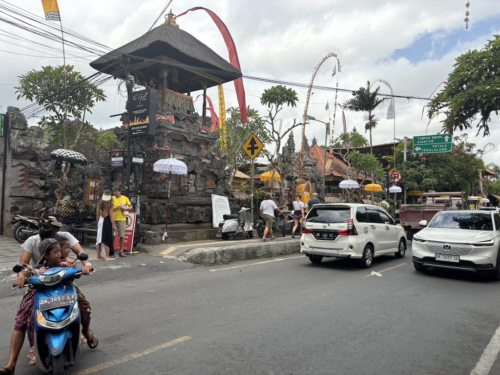
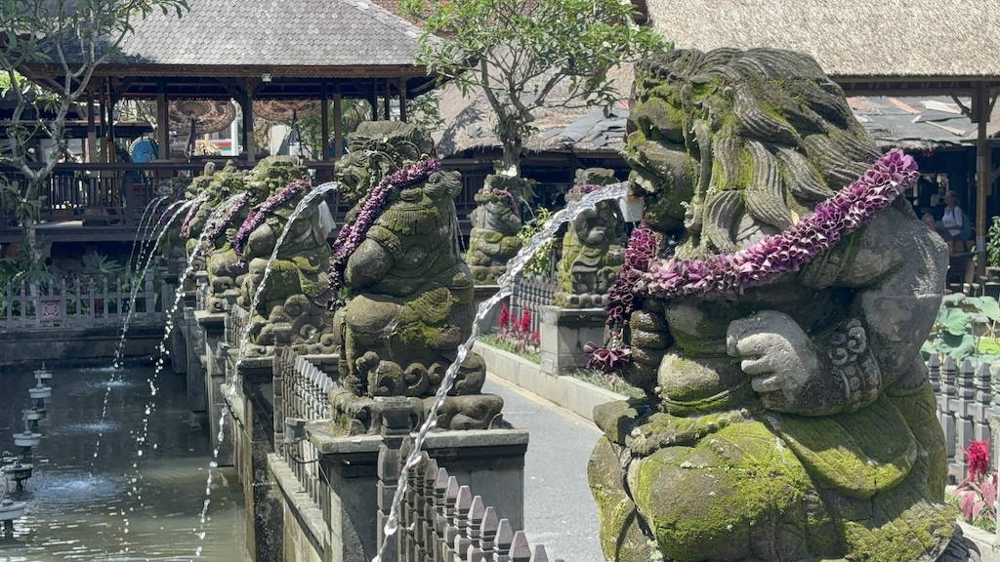
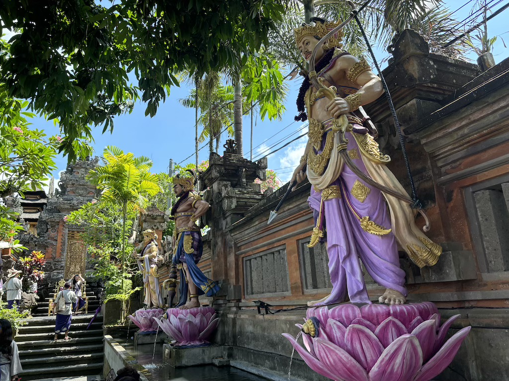
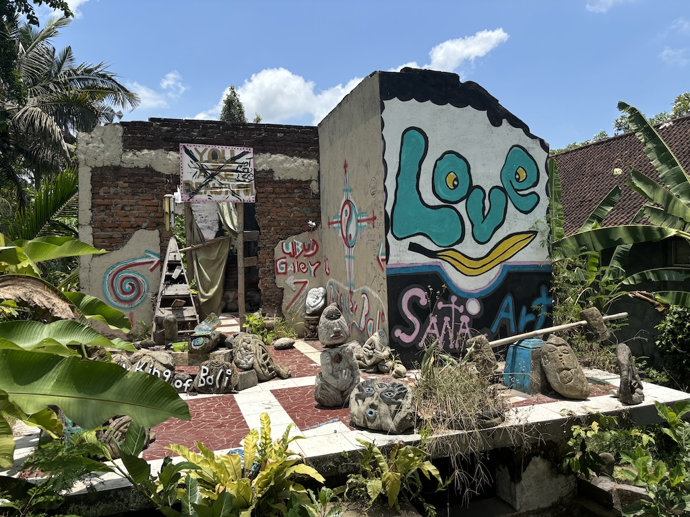
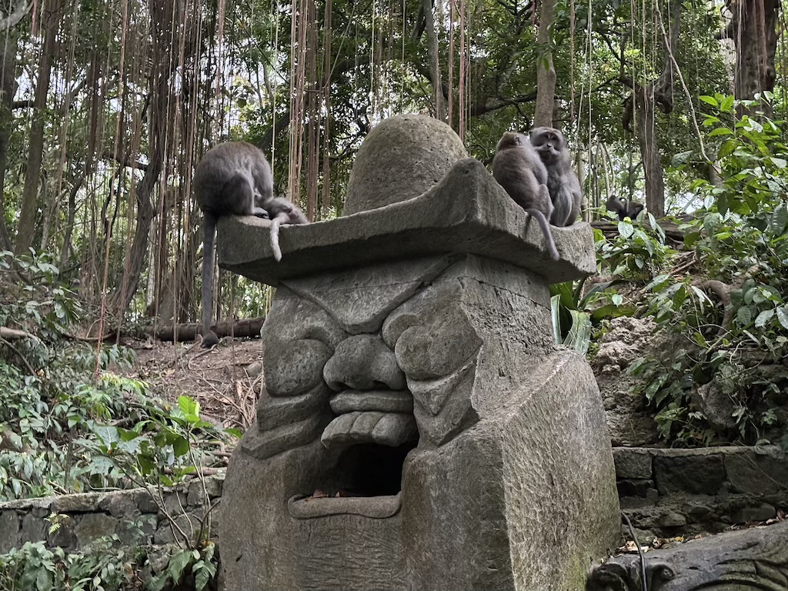
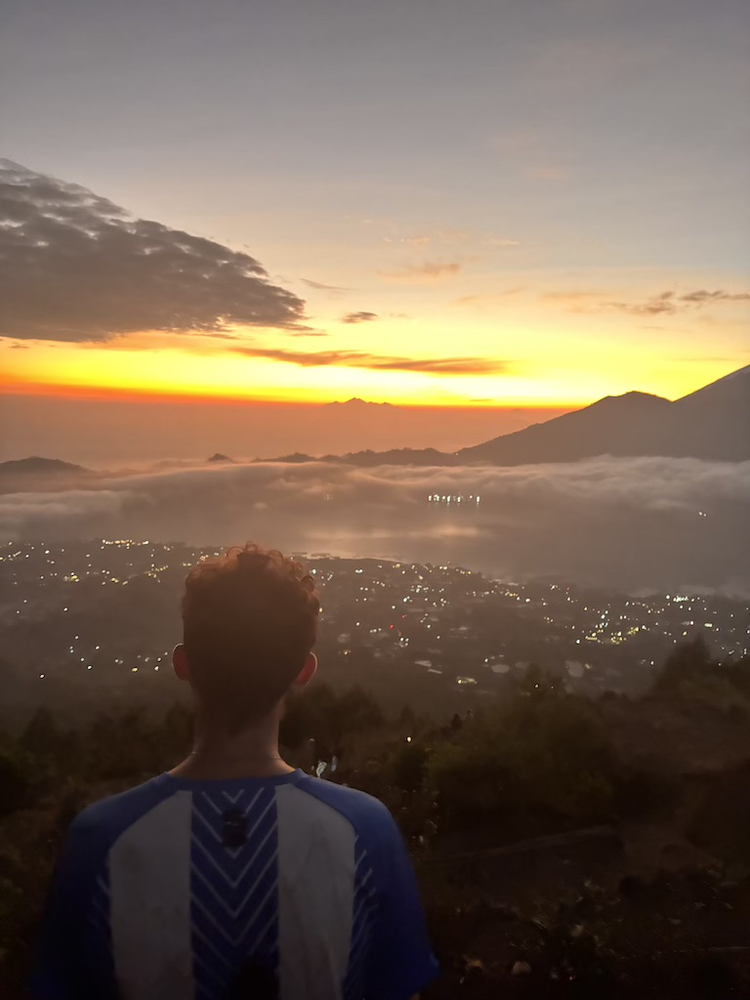
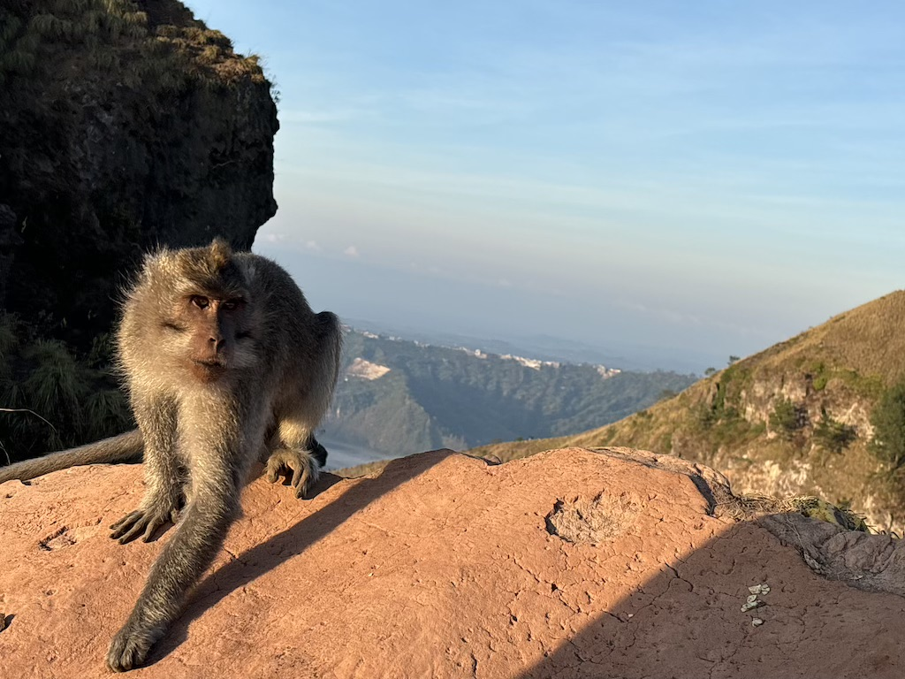
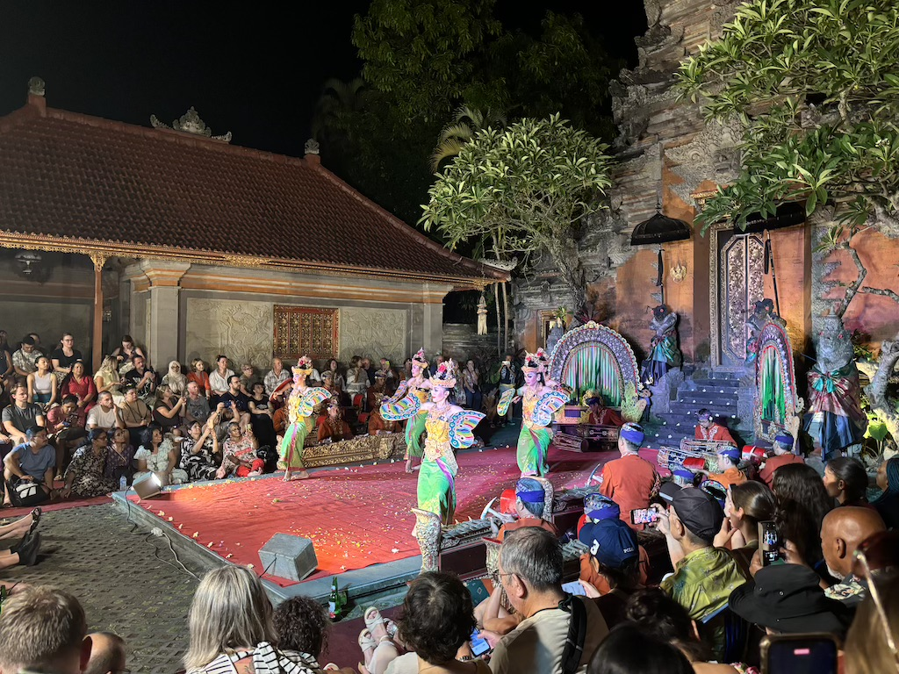

18th to 20th October
After taking a Batik Air flight from Labuan Bajo to Bali and securing a ride to Puji's Hostel, I spent my first evening in Ubud. The hostel was full of others traveling, most of English and German descent. Common discussion was about various activities people had booked to do such as quad biking, walking in rice fields and day trips to pool-side bars. There was also talk of a guy who hadn't been seen all day, bed bound by the so-called "Bali Belly".
The next day was my first real opportunity to see Ubud. I wandered up to the main street that ran through town and witnessed an extremely different kind of road to anything in Japan. Cars and mopeds whizzed up and down the streets constantly, leaving tarmac riddled with potholes and chunks of pavement missing. The bikes were clearly the key means of transport, using all available space, including the pavement, to overtake all traffic.
I stumbled across this temple which I later learnt is the Ubud Water Temple !FACTCHECK. Seeing other tourists go in and out I decided to enter.
Upon entry I was given a robe to cover my arms and legs and a ribbon to wrap around my head. Inside was a walkway between 2 bodies of water to a large armchair. All along this walkway these statues spouted water creating ripples in the water and a pleasant sound.
After walking to the end of this central way I wandered around the edge and admired more of the stonework. The wall of the temple was heavily detailed with !STYLENAME style. These statues particularly stood out being in full colour and intricately made. The gods features below are !FACTCHECK
Insert content here

Insert content here
Insert content here
Insert content here
Insert content here
Insert content here
Insert content here
Navigate home